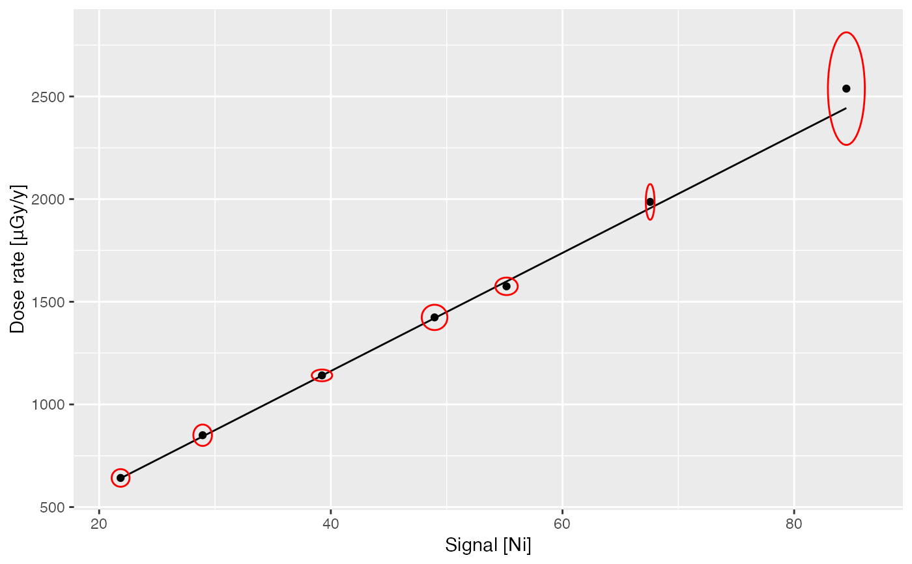

fit_dose builds a calibration curve for gamma dose rate estimation.
fit_dose(object, ...) predict_dose(object, spectrum, ...) # S4 method for GammaSpectra fit_dose( object, Ni_noise, Ni_range, NiEi_noise, NiEi_range, alpha = 0.05, details = NULL, ... ) # S4 method for CalibrationCurve,missing predict_dose(object, threshold = c("Ni", "NiEi"), epsilon = 0, ...) # S4 method for CalibrationCurve,GammaSpectrum predict_dose(object, spectrum, threshold = c("Ni", "NiEi"), epsilon = 0, ...) # S4 method for CalibrationCurve,GammaSpectra predict_dose(object, spectrum, threshold = c("Ni", "NiEi"), epsilon = 0, ...)
| object | A GammaSpectra or CalibrationCurve object. |
|---|---|
| ... | Currently not used. |
| spectrum | An optional GammaSpectrum or GammaSpectra object in which to look for variables with which to predict. If omitted, the fitted values are used. |
| Ni_noise, NiEi_noise | A length-two |
| Ni_range, NiEi_range | A length-two |
| alpha | A |
| details | A |
| threshold | A |
| epsilon | A |
fit_dose returns a CalibrationCurve object.
predict_dose returns a data.frame with the following
columns:
(character) the name of the spectra.
(numeric) the integrated signal value
(according to the value of threshold; see
integrate_signal).
(numeric) the integrated signal error value
(according to the value of threshold; see
integrate_signal).
(numeric) the predicted gamma dose rate.
(numeric) the predicted gamma dose rate
error.
predict_dose predicts in-situ gamma dose rate.
Mercier, N. & Falguères, C. (2007). Field Gamma Dose-Rate Measurement with a NaI(Tl) Detector: Re-Evaluation of the "Threshold" Technique. Ancient TL, 25(1), p. 1-4.
York, D., Evensen, N. M., Martínez, M. L. & De Basabe Delgado, J. (2004). Unified Equations for the Slope, Intercept, and Standard Errors of the Best Straight Line. American Journal of Physics, 72(3), p. 367-75. DOI: 10.1119/1.1632486.
## Import CNF files for calibration spc_dir <- system.file("extdata/BDX_LaBr_1/calibration", package = "gamma") spectra <- read(spc_dir) ## Set dose rate values and errors for each spectrum data("clermont") set_dose(spectra) <- clermont[, c("gamma_dose", "gamma_error")] ## Build the calibration curve calib_curve <- fit_dose( spectra, Ni_noise = c(22.61, 0.05), Ni_range = c(300, 2800), NiEi_noise = c(25279.63, 1.66), NiEi_range = c(165, 2800) ) ## Check the linear model get_model(calib_curve, "Ni")#> value error #> slope 28.78006 0.6422494 #> intercept 15.31287 27.1046646#> value error #> slope 0.03038954 6.146198e-04 #> intercept 0.26434778 2.462384e+01#> Warning: conversion failure on 'Dose rate [μGy/y]' in 'mbcsToSbcs': dot substituted for <ce>#> Warning: conversion failure on 'Dose rate [μGy/y]' in 'mbcsToSbcs': dot substituted for <bc>#> Warning: conversion failure on 'Dose rate [μGy/y]' in 'mbcsToSbcs': dot substituted for <ce>#> Warning: conversion failure on 'Dose rate [μGy/y]' in 'mbcsToSbcs': dot substituted for <bc>#> Warning: conversion failure on 'Dose rate [μGy/y]' in 'mbcsToSbcs': dot substituted for <ce>#> Warning: conversion failure on 'Dose rate [μGy/y]' in 'mbcsToSbcs': dot substituted for <bc>#> Warning: conversion failure on 'Dose rate [μGy/y]' in 'mbcsToSbcs': dot substituted for <ce>#> Warning: conversion failure on 'Dose rate [μGy/y]' in 'mbcsToSbcs': dot substituted for <bc>#> Warning: conversion failure on 'Dose rate [μGy/y]' in 'mbcsToSbcs': dot substituted for <ce>#> Warning: conversion failure on 'Dose rate [μGy/y]' in 'mbcsToSbcs': dot substituted for <bc>#> Warning: conversion failure on 'Dose rate [μGy/y]' in 'mbcsToSbcs': dot substituted for <ce>#> Warning: conversion failure on 'Dose rate [μGy/y]' in 'mbcsToSbcs': dot substituted for <bc>#> Warning: conversion failure on 'Dose rate [μGy/y]' in 'mbcsToSbcs': dot substituted for <ce>#> Warning: conversion failure on 'Dose rate [μGy/y]' in 'mbcsToSbcs': dot substituted for <bc>#> Warning: conversion failure on 'Dose rate [μGy/y]' in 'mbcsToSbcs': dot substituted for <ce>#> Warning: conversion failure on 'Dose rate [μGy/y]' in 'mbcsToSbcs': dot substituted for <bc>## Estimate gamma dose rates predict_dose(calib_curve, spectra, threshold = "Ni")#> Warning: The following value does not lie in the curve range: #> * LMP#> name Ni_signal Ni_error gamma_dose gamma_error #> BRIQUE BRIQUE 67.42712 0.1541155 1955.8692 43.87509 #> C341 C341 28.79357 0.3283695 843.9936 21.15128 #> C347 C347 48.81431 0.4532472 1420.1916 34.32658 #> GOU GOU 55.02787 0.3955437 1599.0181 37.48878 #> LMP LMP 21.71174 0.3163913 640.1779 17.06224 #> MAZ MAZ 39.09459 0.3609312 1140.4576 27.54219 #> PEP PEP 84.36537 0.6514870 2443.3531 57.69762predict_dose(calib_curve, spectra, threshold = "NiEi")#> Warning: The following value does not lie in the curve range: #> * LMP#> name NiEi_signal NiEi_error gamma_dose gamma_error #> BRIQUE BRIQUE 64058.09 4.882838 1946.9606 39.37700 #> C341 C341 27733.18 10.553649 843.0632 17.05373 #> C347 C347 46143.33 14.341715 1402.5391 28.36930 #> GOU GOU 52596.04 12.537223 1598.6341 32.33416 #> LMP LMP 21020.28 10.233051 639.0612 12.92857 #> MAZ MAZ 37640.75 11.534488 1144.1496 23.14276 #> PEP PEP 80122.28 20.456902 2435.1440 49.25402